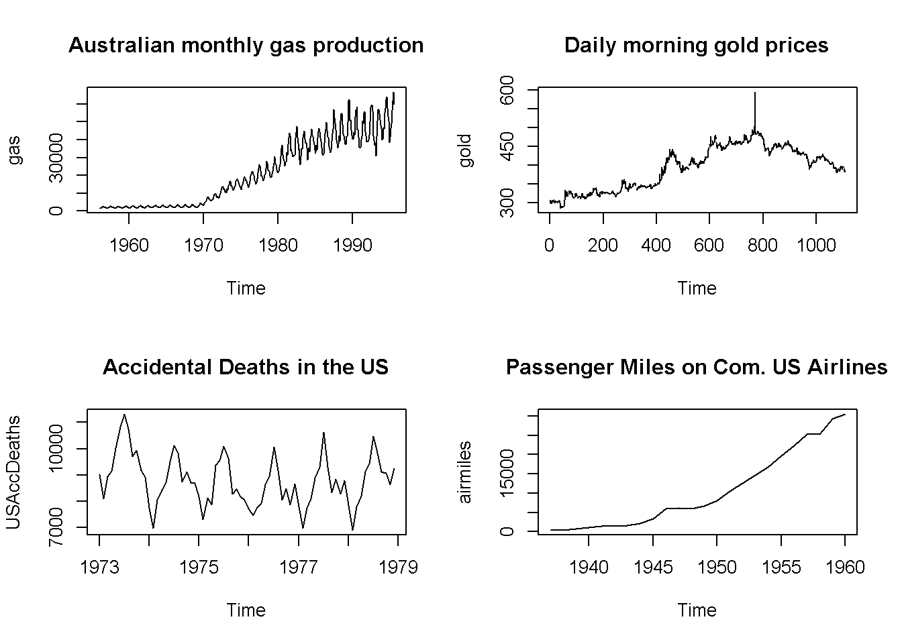
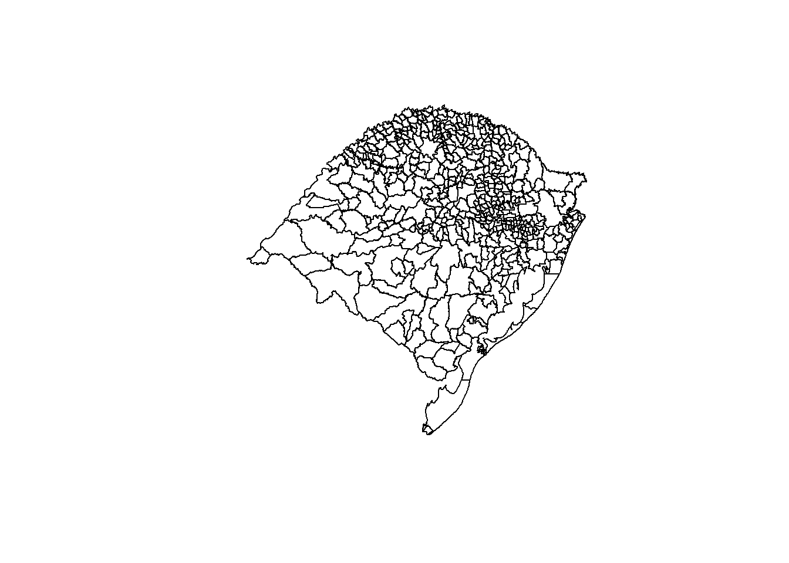

Capítulo 11 Séries Temporais
Felipe Micail da Silva Smolski
Em muitos casos as observações numéricas estão expressas ou são obtidas em períodos de tempo, sejam em anos, meses, dias, horas, etc. Neste caso denominam-se de séries temporais estes conjuntos de observações ordenadas no tempo (Morettin e Toloi 1986), tendo como exemplos o preço diário de uma determinada ação em dado período, as temperaturas mensais em alguma cidade ou mesmo o número anual de óbitos por acidentes na última década. O nível da frequência da série a ser analisada pode ser inclusive representada por invtervalos de tempo em segundos, como a quantidade de acessos a determinado site a cada segundo.
O interesse de pesquisa quanto ao estudo das séries temporais vão ao encontro de efetuar sumarizações dos dados, descrevendo o comportamento da série e verificando se há sazonalidade ou tendência, importantes para efetuarem-se previsões; verificar o mecanismo de geração das séries; analisar a causalidade entre duas séries; classificar os indivíduos com relação a algum padrão; ou mesmo efetuar o controle de algum processo que envolve o conteito de sistema dinâmico (Morettin e Toloi 1986).
11.1 Características das séries temporais
Dentre as características das séries temporais encontra-se o fato de que elas podem ser estacionárias, ou seja, quanto a série varia em torno de uma média e variância constante (Morettin 2011), ou não-estacionárias, quando não apresenta a premissa anterior, contendo tendências que movem-se ao redor de médias flutuantes (Bueno 2011).
Estocásticas x Determinísticas
As séries temporais são formadas pelos seguintes componentes:
Tendência: a tendência é identificada quando há movimento persistente e gradual nas observações ao longo do tempo, positivo ou negativo. Segundo Morettin e Toloi (1986) a tendência é resultado de fatores os quais são medidos em períodos longos de tempo, sendo movimentos suaves.
Sazonalidade: o componente sazonal aparece em observações mensais, trimestrais ou diárias, sendo constituída por um padrão de elevações ou diminuições da série em deterninados períodos. Importante ressaltar que a intensidade da evidência de sazonalidade varia de acordo com a característica da série.
Aleatoriedade: exluindo da série temporal a sua tendência e sazonalidade, resta o componente aleatório (também denominado residual ou irregular), que deseja-se que seja aleatório (ruído branco), com média zero e variância constante (Morettin e Toloi 1986).
library(BETS)
library(forecast)
#autoplot(BETSget())
#gas1=window(gas, start=c(1973,1), end=c(1978,12))
#autoplot(cbind(gas1,USAccDeaths), facets=TRUE,ylab = "")
par(mfrow=c(2,2))
plot(gas, main="Australian monthly gas production")
plot(gold, main="Daily morning gold prices")
plot(USAccDeaths, main="Accidental Deaths in the US")
plot(airmiles,main="Passenger Miles on Com. US Airlines")
11.2 Criando séries temporais
Além de importar as séries temporais por meio de pacotes e repositórios, é possível fazer a criação das mesmas utilizando a função ts(). No exemplo abaixo os valores contidos no objeto “dados” foram convertidos para série temporal, indicando-se os períodos de início (start) e fim da série (end), além da frequência da série (frequency), neste caso será uma série mensal (= 12). AS séries podem ter frequência anual (frequency = 1), trimestral (4), mensal (12) e semanal (52).
dados = c(100,200,300,500,300,350,100,150,100,300,350,100)
serie = ts(dados, start = c(2018,1), end=c(2018,12), frequency = 12)
serie Jan Feb Mar Apr May Jun Jul Aug Sep Oct Nov Dec
2018 100 200 300 500 300 350 100 150 100 300 350 100class(serie)[1] "ts"Para plotar o gráfico da série pode ser utilizado a função nativa do R plot(), ou mesmo a função autoplot() do pacote de elaboração de gráficos ggplot2 como no exemplo abaixo:
library(ggplot2)
autoplot(serie, main = "Série temporal criada")
A variação bruta entre os meses da série pode ser extraída utilizando o comando lag(), como demonstrado abaixo:
serie-lag(serie,-1) Feb Mar Apr May Jun Jul Aug Sep Oct Nov Dec
2018 100 100 200 -200 50 -250 50 -50 200 50 -250Da mesma forma, a variação percentual em cada mês da série temporal pode ser extraída:
varserie = (serie/lag(serie,-1)-1)*100
varserie Feb Mar Apr May Jun Jul Aug Sep Oct Nov
2018 100.00 50.00 66.67 -40.00 16.67 -71.43 50.00 -33.33 200.00 16.67
Dec
2018 -71.43As informações principais da série podem ser extraídas com os comandos start, end e frequency, bem como a filtragem de um período pretendido da série pode ser efetuada com a função window(), onde podem ser informados os períodos inicial e final que se almeja:
start(serie)[1] 2018 1end(serie)[1] 2018 12frequency(serie)[1] 12window(serie, start=c(2018,10)) Oct Nov Dec
2018 300 350 100Referências
Morettin, Pedro A., e Clélia M. Toloi. 1986. Séries Temporais. 1 ed. São Paulo: Atual.
Morettin, Pedro A. 2011. Econometria Financeira - Um curso em séries temporais financeiras. 2 ed. São Paulo: Blucher.
Bueno, Rodrigo de Losso da Silveira. 2011. Econometria de Séries Temporais. 2 ed. São Paulo: Cengage Learning.